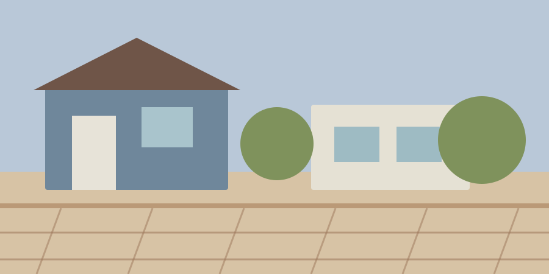
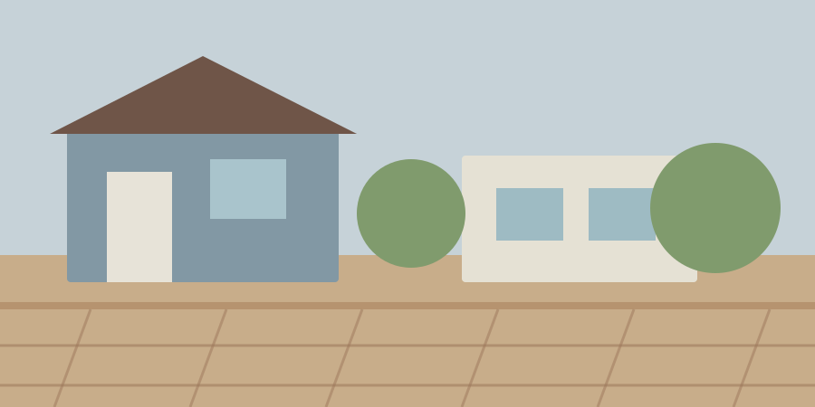
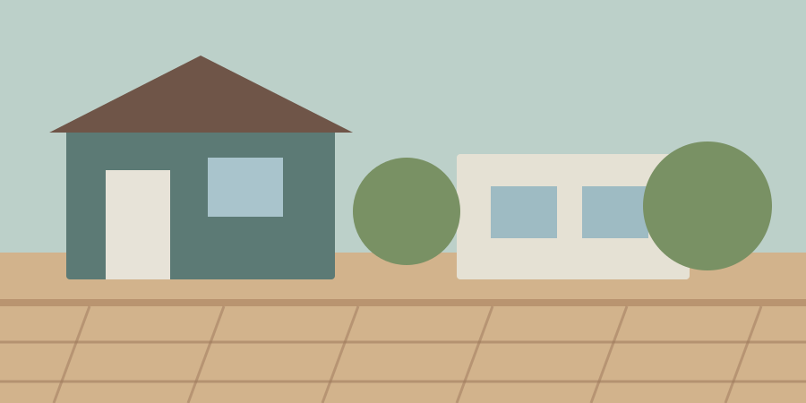
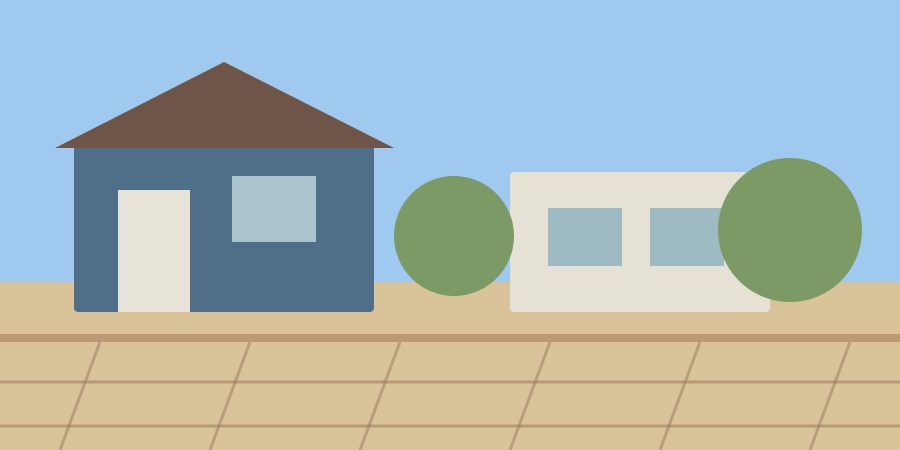
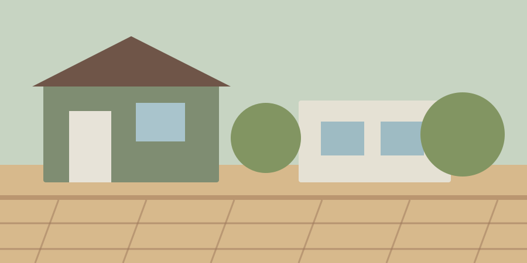
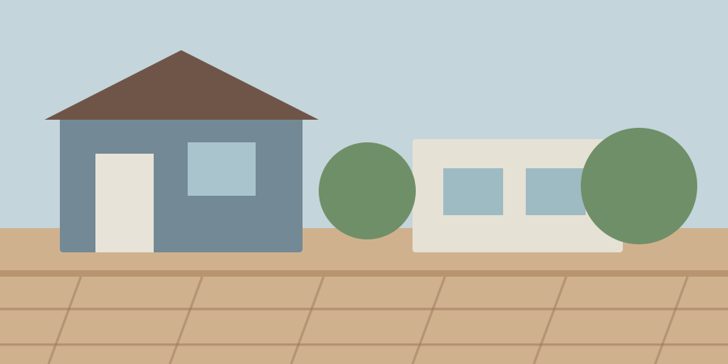
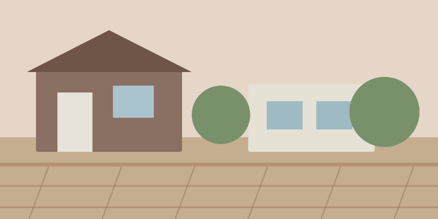
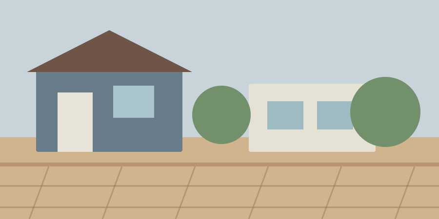
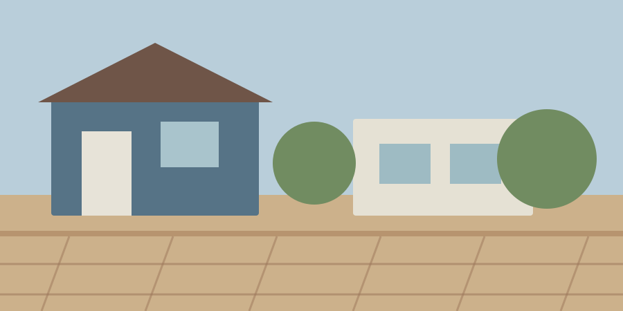

从产品研发与市场需求出发，逐步建立稳定的产品体系与服务基础。
光脚丫花园地板

从产品研发与市场需求出发，逐步建立稳定的产品体系与服务基础。

持续完善生产流程与质量标准，为后续规模化发展打下基础。

围绕材料、结构与表面工艺持续优化，丰富产品应用场景。

2013年，新生产基地投入使用，整体产能与交付能力进一步提升。

继续推进制造工艺与品质管理升级，提升产品稳定性与一致性。

市场覆盖进一步扩大，产品与服务逐渐进入更多区域和应用项目。

从产品导向向市场导向延伸，进一步完善合作体系与全球业务布局。

加强数字化流程与协同管理，让生产、交付与客户服务更加高效。

持续拓展产品应用与合作网络，形成更加成熟的长期发展体系。